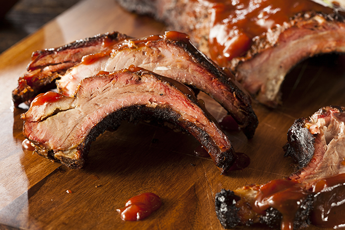

Baby Back Ribs

Description
Sweet Baby Ray's is God-tier barbecue sauce and if you haven't had it I feel sorry for you.
Any time I have used it, the final product has been absolutely delicious.
Enjoy this recipe for Sweet Baby Ray's BBQ Baby Back Ribs.
Ingredients
- 2 baby back ribs, raw
- 1 bottle Sweet Baby Ray's Original Barbecue Sauce
- ¼ cup garlic, granulated
- 2 tablespoons salt, kosher
- 2 tablespoons pepper, ground, black
- 1 baking pan, 9x13 or larger
- Aluminum foil
Steps
- First determine if your pan is large enough to fit the entire racks of ribs. If not cut the ribs into manageable portions, in half, in order to fit allowing to be covered tightly with foil.
- Mix the granulated garlic, kosher salt and black pepper in a small bowl. Season both sides of the baby back ribs generously.
- Place the seasoned ribs in the baking pan crown or arch up. Cover tightly with aluminum foil and place in a 350 degree pre heated oven. Bake for 2-3 hours covered until the ribs are fork tender. Fork tender is when you are able to insert a fork into the meat and the meat is soft and will pull from the bone.
- Slather ribs with Sweet Baby Ray's Original Sauce.
- Once cooked you may either use immediately or cool, cover and refrigerate or freeze until needed. To freeze wrap tightly with plastic wrap once cooled completely.
- To reheat you may follow the Sticky Ribs recipe or reheat on a medium heat grill saucing just before serving.
Back to Recipes